Understanding the problem from the inside 从内部理解问题
User interviews & questionnaires in Nantes 南特的用户访谈与问卷调查
To validate the relevance of the project and ground the solution in real needs, the team conducted user interviews and questionnaires with people in Nantes who expressed interest in gardening or garden sharing. 为了验证项目的相关性并将解决方案建立在真实需求之上，团队对南特有园艺或共享花园兴趣的人进行了用户访谈和问卷调查。
- Urban residents lack access to outdoor growing space, even when motivated 城市居民缺乏户外种植空间，即使有强烈意愿也难以实现
- Garden owners often feel overwhelmed maintaining their space alone 花园主人常常感到独自维护空间不堪重负
- Both groups expressed interest in local, low-commitment connections built around shared activity 两个群体都对围绕共同活动建立的本地、低门槛联系感兴趣
- Trust and privacy were identified as core barriers to adoption 信任与隐私被认为是采用的核心障碍
- These findings directly informed the app structure, including the decision to unlock messaging only after an owner validates a candidate 这些发现直接影响了应用结构，包括仅在园主验证候选人后才开放消息功能的决定
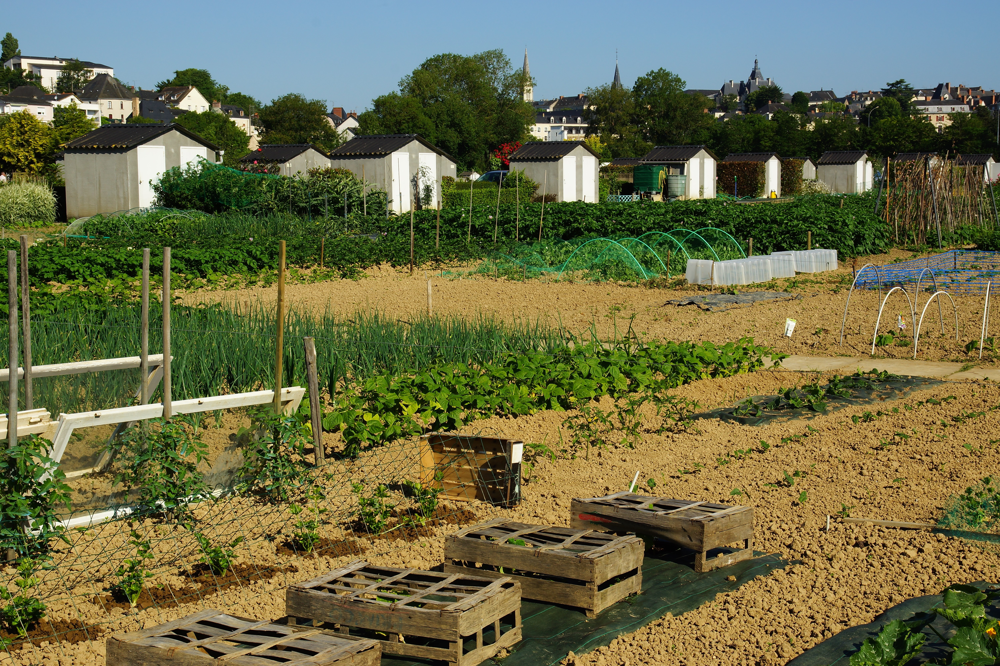
Facilitator & UX/UI Designer 协调者兼 UX/UI 设计师
My role within the team 我在团队中承担的角色
Jardi is a mobile app designed to connect urban residents with local garden owners — and within the team of three, I held the Facilitator role, responsible for maintaining group momentum, preventing dead time during work sessions, and keeping energy and focus throughout the three phases of the project. Jardi是一款旨在连接城市居民与本地花园主人的移动应用——在三人团队中，我担任协调者（Facilitator）角色——负责维持团队动力、防止工作会议中的停滞，并在整个三个阶段中保持团队的活力与专注。
Beyond facilitation, I was actively involved in the full UX and UI design work: user research, wireframing, interface design, and prototyping alongside the team. 在协调工作之外，我也积极参与完整的UX与UI设计工作：用户研究、线框图设计、界面设计及原型制作，与团队协力推进每个环节。
Tools: Figma · FigJam · Notion 工具：Figma · FigJam · Notion
Three phases, one product 三个阶段，一款产品
A long-form academic project structured in three distinct stages 一个分三个明确阶段推进的长期学术项目
Phase 01 第一阶段
Research & Definition 研究与定义
Understanding the subject, its constraints, and its openings. Conducting research, identifying two possible axes of reflection, and presenting them to validate a direction. 深入理解课题、其约束条件及可能的切入点。开展调研，识别两条可能的探索方向，并通过汇报来验证最终方向。
Phase 02 第二阶段
Finalization & Creation 完善与创作
Starting from the validated subject: mapping user personas and journeys, building wireframes, and creating the visual identity, style guide, and page mockups. 从已验证的方向出发：绘制用户画像与用户旅程，制作线框图，创建视觉识别系统、风格指南及页面高保真稿。
Phase 03 第三阶段
Structuring & Prototyping 结构化与原型制作
Producing a functional prototype in the form of a mobile web application. Optimizing production to match available time and skills. Presenting a final deliverable that clearly communicates the proposed solution. 以移动网页应用的形式制作可交互原型。根据现有时间和技能优化产出。呈现一个能清晰传达解决方案的最终交付物。
Jardi: putting people in the garden together Jardi：让人们共同走进花园
A mobile app for the Nantes metropolitan area 一款服务南特都市圈的移动应用
Jardi connects garden owners with people looking to participate in growing. The exchange is built on generosity: in return for a helping hand, owners can offer vegetables, seeds, or other garden resources. Jardi 将花园主人与希望参与种植的人连接起来。交换建立在互惠的基础上：作为劳动的回报，主人可以提供蔬菜、种子或其他园艺资源。
The app is structured around three types of garden activity, reflecting the real lifecycle of a vegetable garden and giving both owners and helpers a clear, shared vocabulary: 应用围绕三种花园活动类型展开——呈现蔬菜园的真实生命周期，并为主人与帮手提供清晰、共同的表达框架：
- 🌱 Plant: new season, or a simple desire for greenery 🌱 种植：新的季节，或对绿意的简单渴望
- 🪴 Maintain: regular or one-off help keeping a garden going 🪴 养护：定期或一次性地帮助维持花园运转
- 🥕 Harvest: helping with a specific harvest moment 🥕 收获：协助完成特定的采收时刻
A warm, accessible visual world 温暖、易用的视觉语言
Logo, color system, and signature detail 标志、色彩体系与标志性细节
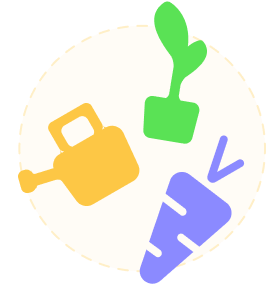
Logo 标志
The watering can 水壶
The watering can imposes itself naturally as the logo: it symbolizes the collaborative tool par excellence. Its soft curves immediately evoke gardening for everyone. 水壶自然而然地成为了标志——它是合作工具的最佳象征。其柔和的曲线立刻唤起所有人对园艺的联想。
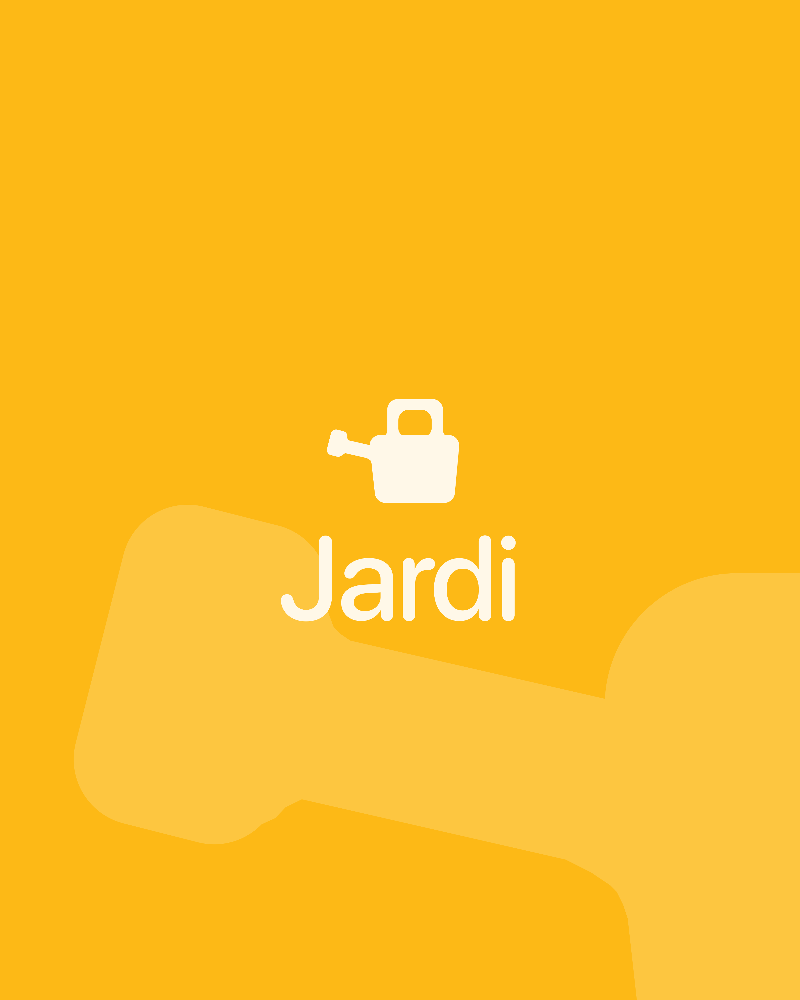
Color 色彩
Sun and season 阳光与季节
Yellow was chosen as the primary color: it evokes joy, sunlight, and sharing. Secondary colors, green for Planter, amber for Entretenir, violet for Récolter, give each mission type a distinct visual identity. 黄色被选为主色调：它唤起欢乐、阳光与分享。辅助色——种植用绿色、养护用琥珀色、收获用紫色——赋予每种任务类型独特的视觉识别。
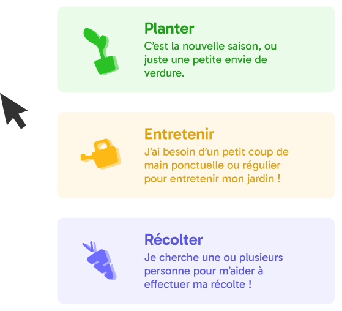
Texture & Detail 纹理与细节
A handmade spirit 手作精神
Dashed borders run throughout the interface, evoking a handmade, cut-out quality, as if the user had crafted the interface themselves. This detail reinforces the human, low-tech spirit of the project. 虚线边框贯穿整个界面，唤起一种手工、剪贴的质感——仿佛是用户亲手制作了这个界面。这一细节强化了项目人性化、低技术的精神内核。
Section 06 第六部分
Key Screens 关键界面
Onboarding 新手引导
First impressions 第一印象
The onboarding introduces Jardi's core concept before the user creates an account: sharing a garden, finding a garden, or both depending on the season. It establishes the tone, warm, accessible, community-first, and walks the user through choosing their role and garden experience level. 新手引导在用户创建账户之前介绍 Jardi 的核心概念：分享花园、寻找花园，或根据季节两者兼顾。它奠定了整体基调——温暖、亲切、以社区为先——并引导用户选择角色和园艺经验水平。
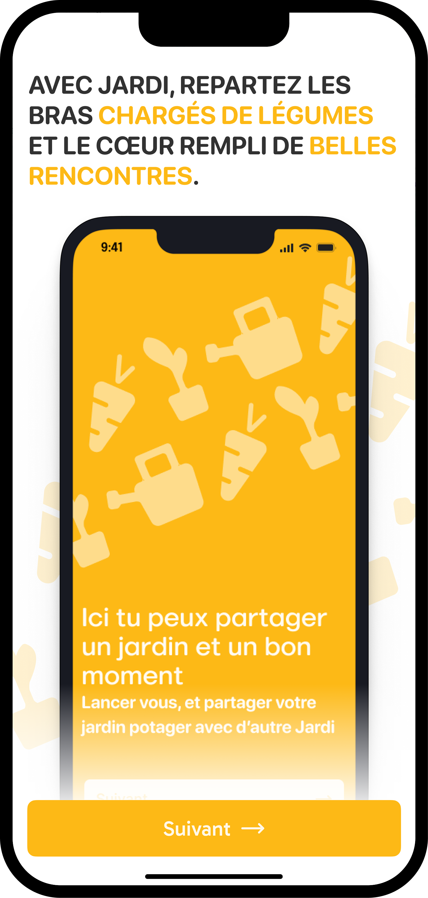
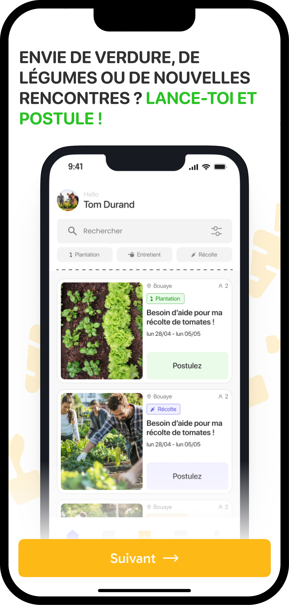
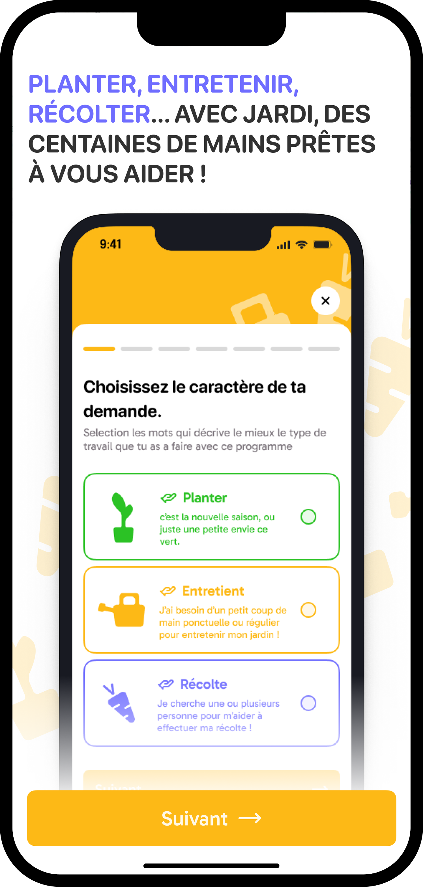
Home & Search 首页与搜索
Finding the right mission 找到合适的任务
The home screen displays available listings filtered by type (Plant / Maintain / Harvest). Users can refine by city, dates, reward preference, and mission size (solo or team). Each listing shows the neighborhood, mission type, date range, and what's offered in return. 首页显示按类型（种植 / 养护 / 收获）筛选的可用招募。用户可按城市、日期、回报偏好及任务规模（独自或组队）进一步筛选。每条招募显示所在街区、任务类型、日期范围及回报内容。
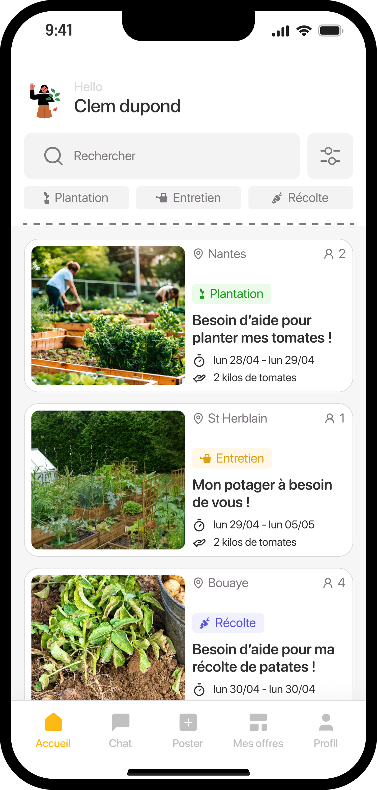
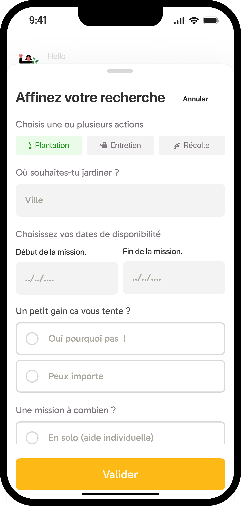
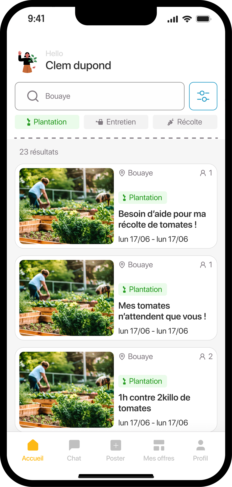
Listing & Application 招募详情与申请
Applying with context 在语境中申请
Tapping a listing reveals the full details: owner profile (with number of recommendations), mission description, dates, garden size, distance, and what's offered in exchange. The candidate writes a short message to the owner to apply. 点击一条招募，可查看完整详情：房主档案（含推荐数）、任务描述、日期、花园面积、距离及交换回报。申请者向房主发送一条简短消息以提交申请。
Before sending, a summary screen shows the owner what information they'll receive, reinforcing the privacy-first approach. 发送前，摘要页面会向房主展示其将收到的信息——强化了隐私优先的设计理念。
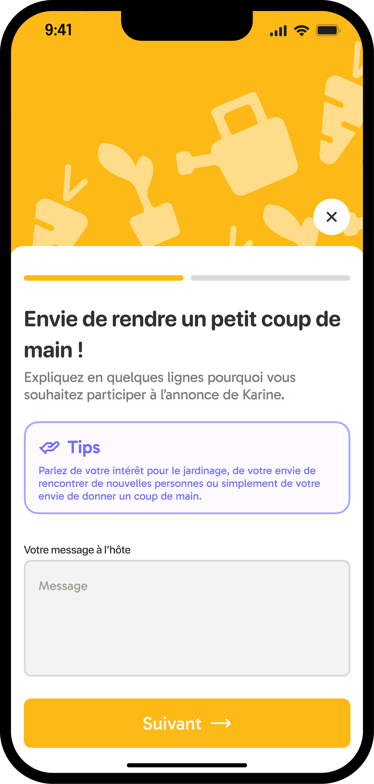
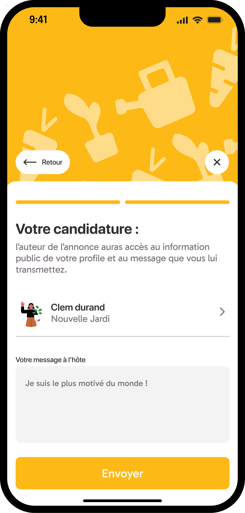
Messaging & My Space 消息与我的空间
Staying connected and tracking your missions 保持联系并跟踪你的任务
Messaging between a candidate and an owner is only available once the owner has validated the applicant. This deliberate friction builds trust on both sides. The chat interface is clean and contextual: it shows the original listing at the top as a shared reference point. 仅当房主确认申请者后，双方之间的聊天才可用。这种刻意设置的摩擦在双方之间建立信任。聊天界面简洁且具备上下文关联——顶部显示原始招募信息，作为共同参考点。
The "My Space" section lets users track their active and past candidatures, see mission status (pending / in progress / completed), and access messaging. At mission end, users are prompted to leave a brief review and optionally recommend Jardi. "我的空间"版块让用户跟踪当前和过去的申请，查看任务状态（待定 / 进行中 / 已完成），并进入聊天。任务结束后，用户会被提示留下简短评价，并可选择推荐 Jardi。
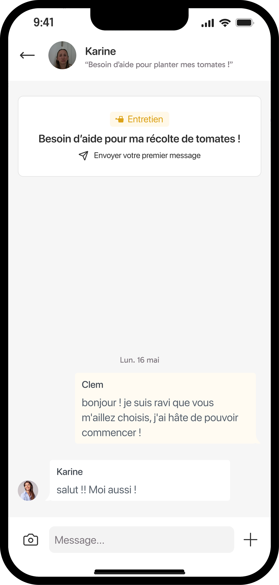
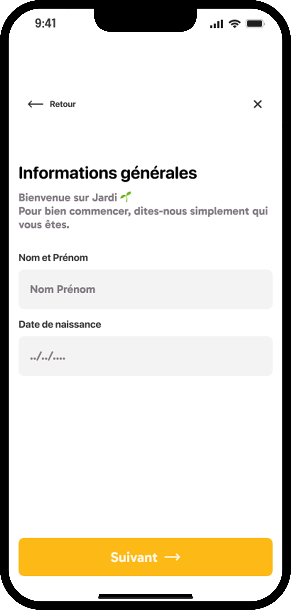
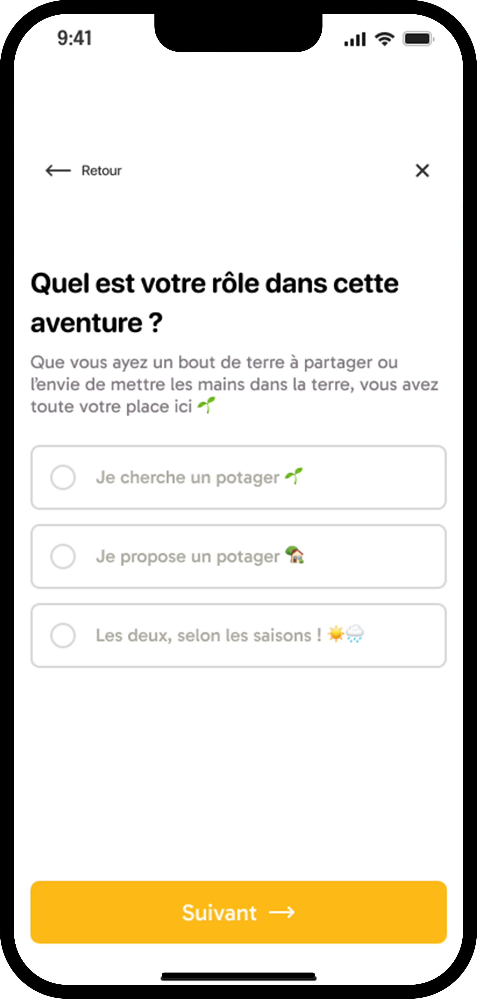
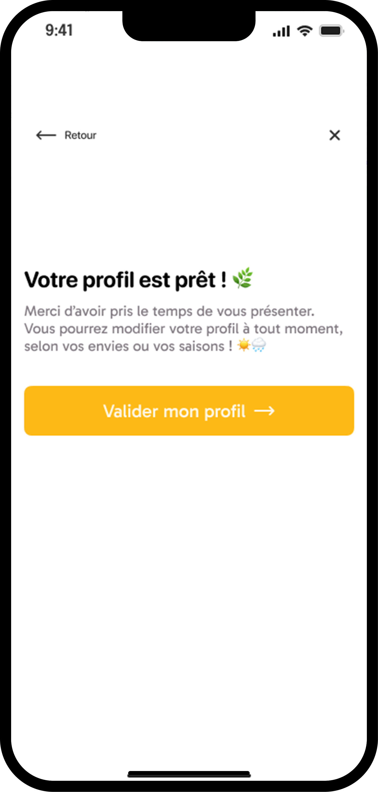
Posting a Listing (Owner view) 发布招募（房主视角）
Publishing an offer 发布一条招募
Owners can post a new listing in a step-by-step flow: type of activity → title and number of helpers needed → description → photos and garden surface area → location → dates and times → optional reward (vegetables, seeds, etc.) → confirmation preview. 房主可通过分步流程发布新招募：活动类型 → 标题和所需人数 → 描述 → 照片和花园面积 → 地点 → 日期和时间 → 可选回报（蔬菜、种子等）→ 确认预览。
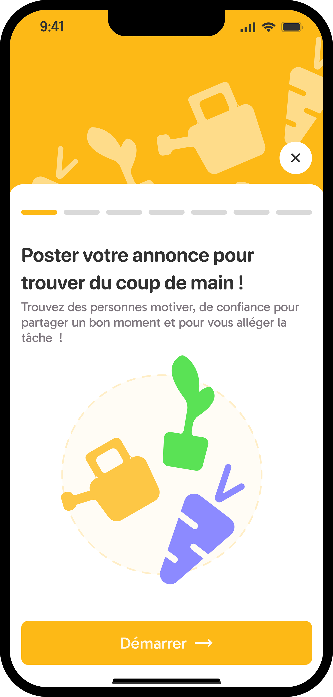
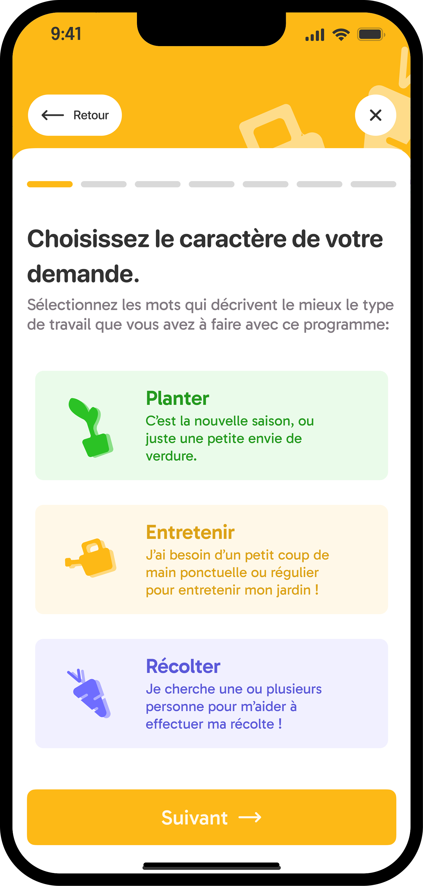
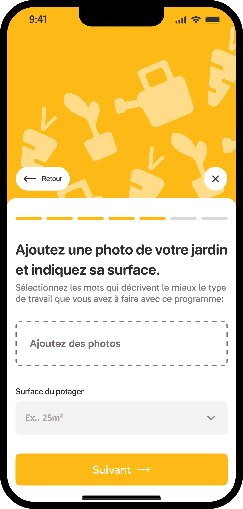
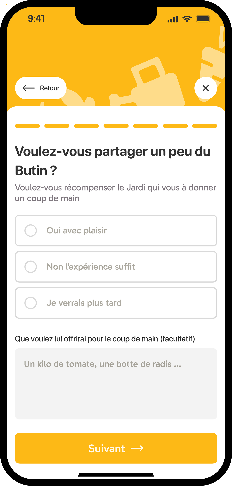
Key Learnings 关键收获
- This project taught me that branding and UX are not separate disciplines. Every visual choice — color, texture, logo mark — carries a functional message that shapes how users feel about the product. 这个项目让我明白品牌设计和UX并非两个独立领域，每一个视觉选择都传递着影响用户感受的功能性信息。
- Designing for a niche audience meant resisting the temptation to generalize. The specificity of the users' context was a creative constraint that led to stronger, more intentional decisions. 为细分用户群体设计意味着抵制泛化的诱惑，用户情境的特殊性成为了推动更有意图设计决策的创意约束。
- Presenting a visual identity alongside a digital product forced me to think about consistency across touchpoints — from app screens to logo usage at small sizes. 同时呈现视觉识别系统和数字产品，迫使我思考跨触点的一致性，从应用界面到小尺寸使用的标志。